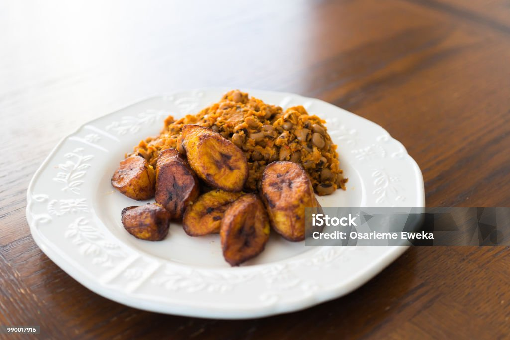

Main Diets

Vegetable Soup
A hearty vegetable soup made with fresh seasonal vegetables, perfect for a light and nutritious meal.

Beans and Plantain
A traditional dish featuring seasoned beans served with fried or boiled plantains, offering a delightful combination of flavors.

Jollof Rice
A popular West African dish made with rice cooked in a flavorful tomato sauce, often served with grilled chicken or fish.

Fried Rice
A delicious dish made with rice stir-fried with vegetables, eggs, and your

Bean Cake and Pap
A traditional breakfast dish consisting of deep-fried bean cakes (akara) served